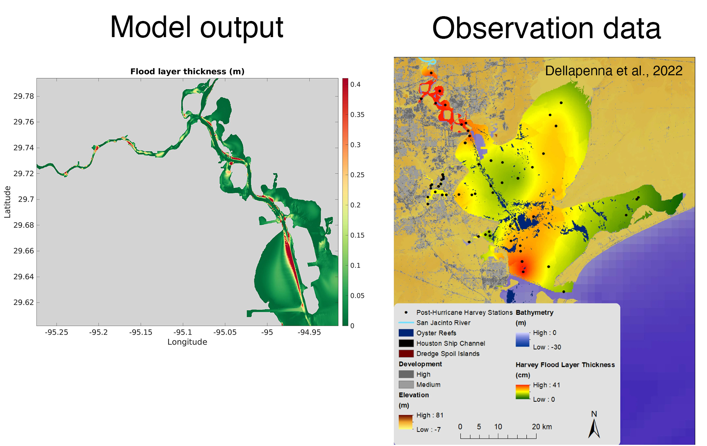

Sediment Mobilization from Upstream Reaches of Galveston Bay During Hurricane Harvey
Course Project Fall 2023
Zhiyun Du: zdu@vims.edu
Hanyu Tang: htang63@wisc.edu
Course Project Fall 2023
Zhiyun Du: zdu@vims.edu
Hanyu Tang: htang63@wisc.edu


Motivation
|

|


Notice the time lags among different factors;interactions of Buffalo Bayou, San Jacinto River, and storm surge caused a compound flooding event.


Model agrees wells with observations in terms of hydrodynamics. The simulation reproduces multiple peaks in water levels (due to different factors) and the extended flooding.

There is mismatch between model results and sediment core data.Estimated mass of deposit sediments within San Jacinto Estuary: 2.44× 106 tons (modeled), 7.73× 106 tons (observed).
CIV 618 Fall 2023